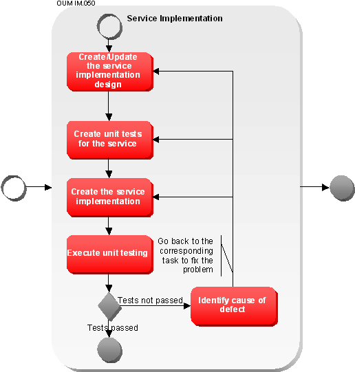

OUM |
Technique Overview |
||
Method Navigation |
Current Page Navigation |
||
|
|
||||||||
The purpose of this technique is to provide guidance on how to implement SOA services.
Service Implementation is responsible for delivering the implementation of a service. This implementation is exposed through the service interface, but is not only responsible for implementing the interface in accordance to the contract, but rather the entire service in accordance with the contract. This includes coverage of all functional and supplemental requirements, as well as the service enablement requirements for the service.
The “analysis” required to be done prior to beginning Service Implementation comes in the form of the work completed as part of Service Design. Augmented with the service contract, the service design document and the physical interface provide the necessary information required to begin service implementation.
Service implementation should really be treated as its own smaller scale software engineering project. The resulting Service Implementation must be passed through Service Testing prior to the completed service being delivered into production. Much like traditional delivery processes, the development of the test plans, and test cases may take place in parallel with the implementation effort, which will go through a set of design, implementation, and unit test cycles prior to entering formal service testing.
Service Implementation - This technique provides guidelines on how to perform Service Implementation using an iterative approach. The resulting Service Implementation must be passed through Service Testing prior to the completed service being delivered into production.
No. |
Step | Component | Component Description |
|---|---|---|---|
1 |
Create/Update the service implementation design. | Service Implementation Design | The Service Implementation Design covers Component Design, Interface and Class Design, Scenarios, and Data Design. |
2 |
Create unit tests for the service. | Service Unit Tests | The Service Unit Tests are test that should be performed to unit test the service. |
3 |
Create/Update the service implementation. | Service Implementation | The Service Implementation is the implemented service in actual code. |
4 |
Execute unit testing. | Unit Test Results |
The Unit Test Results are the list of defects found during unit test of the service. |
5 |
Identify cause of defect. | If a defect is uncovered during unit testing, identify the cause of the defect to determine from which step to restart. |
One of the most overlooked aspects of service engineering within a SOA is Service Implementation. It cannot be considered just a simple-matter-of programming which is quite often the case when implementing projects that are not being designed to be reused by a potentially large population of consumers.
Service Implementation is much more than simply writing some code that implements the interface provided through service design. In reality, service implementation has some parallels to delivering a small, traditional software engineering project that picks up after the Inception phase. In fact it is a good practice to utilize a streamlined version of a traditional software engineering methodology for the purpose of service implementation. For the most part, a simplified design, implementation, and unit test cycle will suffice, regardless of the method used; the key is to be consistent.

You may be surprised to see “design” listed as part of the implementation delivery cycle. In this case, design is referring to the implementation design. Service implementation design is a more traditional design process where the implementation is designed through modeling classes, interfaces, data, interactions (sequence diagrams), etc. In some cases, the implementation of a particular service may be quite complex, and having a standardized service implementation discipline in place will make this important task go smoother.
Service Implementation represents one of the final steps that take place prior to a service being realized in a production environment. It also serves as a transitional process from service design through testing and deployment. Service design may be impacted by the activities of service implementation. It is close to impossible to consider every detail during the service design phase, and to ensure efficiency, some details may be uncovered during service implementation that will influence design. Therefore an iterative element exists between service design and service implementation in order to facilitate the handling of any design details that may have fallen through the cracks. If major design details are being missed however, then some enhancements to the design process should be considered to prevent future recurrences.
Similarly with design, service implementation also has interaction with the service testing cycle prior to being released into service deployment, where it becomes operational. For obvious reasons, service testing will more than likely result in changes to the service implementation, if not only to fix defects. This may have a ripple effect all the way back to service design. In severe cases, service definition may need to be revisited as a result of defects encountered during service testing, and if so, process improvements are more than likely necessary to prevent future recurrences.
The primary influencing factor of Service Implementation is the service contract. Secondary factors include the service design, and consideration for the consumers. This is because the primary goal of service implementation is to fulfill the terms of the contract.
A great deal of discipline is required while engineering and implementing services. This is because of the strategic importance that these services provide, as well as the wide variety and number of consumers (and potential consumers) that will be utilizing the service. Some services will have an almost “infrastructure” like purpose within the SOA, and as such, all services should be implemented with this in mind.
The Service Implementation design covers the same areas that a traditional project design would cover. Topics covered in the Implementation Design include:
Technical design decisions need to be made to ensure that the service complies with any architectural policies applied. Refer to the Service Architecture technique for more information. The following guidelines specifically apply to implementations:
There will be many instances where a service implementation could benefit by reusing the capabilities of another service. In this case the service implementation is a potential consumer to the other service. If this usage was not anticipated through the service identification & discovery process, or even service definition, then the reuse justification would be required to reuse the service in its service enabled form.
However, in some cases, the overhead required to invoke the service through service infrastructure (such as a web service), may require more overhead than the contract will allow. In these cases there are a couple options.
The first option is to invoke the functions of the service using an alternate technology that is better performing such as RMI. In this case you are still doing runtime reuse, and justification would be required to reuse the service in this manner. Significant runtime performance may be possible however. The drawback is that you are bypassing the service enablement components of the service you are dependant on. This means that any benefits gained by using infrastructure may be lost, such as statistic generation, audit, etc. In fact your service may be skewing historical results gathered. These conditions should be considered by the SOA Leadership team prior to justification of the requested usage of the service in a non-standard way. If this type of reuse will be allowed, the dependency between the two services still needs to be recorded in the enterprise repository.
The other option is to create a component library that will be used by both service implementations. These components consist of the various functional elements of the implementation that are relevant to both services. In this case design-time reuse is being used, which is less restrictive. This option has the advantage of being the most optimal from a performance perspective; the burden is then placed on the maintenance side, since the code has to be managed in a shareable source code repository, as well as any configuration requirements will have be mirrored for each deployment of the library. The code for the library still needs to be branched when any changes are required to the library. In this scenario the two services do not have a dependency between them as they may still evolve independently.
Parsing Technologies
There are three types of XML parsing technologies available today. Each of them has a slightly different purpose and is better suited for different tasks and document types. The first technology is the Document Object Model (DOM) that reads the entire XML document into memory and represents the data in a tree-like structure. DOM parsers are best suited for the following scenarios:
The second type of parsing technology is the Simple API for XML (SAX). The advantage to SAX is that the entire document does not need to be read into memory, and provides an efficient read only access to the XML data. Appropriate usage of SAX parsers include:
Data Binding technology is the third type, for which there are many different implementations. XML Beans is the most common implementation of this type of parsing technology. Appropriate usages of Data Binding parsing include:
The primary point to look at here is to not simply choose the option based on your familiarity with a particular technology. Each option has its appropriate usages, and in every implementation should be considered.
It is not all that uncommon for XML messages to pass through one or more intermediary steps prior to arriving at its intended destination. In many scenarios parsing is done in order to validate the XML at each step along the way, which may be unnecessary. Further, some infrastructure may be able to handle parsing XML once, and then passing the parsed structure along to other infrastructure components in object format (using RMI and XML Beans for instance). These have deployment implications, but may be utilized to greatly enhance the performance of your SOA.
In the case where document based routing will be used, it is a good practice to separate out the routing elements into a separate, smaller, parse-able document whenever possible.
XML brings another set of challenges in the form of security. Here is a set of common security issues that should be planned for when implementing solutions utilizing XML:
Note: For more extensive information on XML and security issues with respect to SOA, you should check out Thomas Erl’s “Service-Oriented Architecture: A Field Guide to Integrating XML and Web Services.”
Unit testing, in many (not all) delivery shops, has become a long lost activity. In the case of service engineering, it should not be overlooked. The impact of defects within a service is typically larger due to the potential number of consumers that may be affected. Any extra steps that can be taken during service delivery to ensure quality are highly recommended. Further, many development tools today provide capabilities to facilitate unit testing.
It is highly recommended to first implement the unit tests and then to start implementing the service itself. The developer unit tests should realize a white box test of the service. Instead of just testing the interface it is important to decide upon the test data to touch all positive and negative flows within the service implementation. Later on, executing the tests measuring the code coverage will allow for identifying possibly irrelevant functionality of the implementation. But often this indicates bad test implementation.
A good practice is to have different developers to implement the service and to implement the unit tests of the service. Both will use the same contract and interface definition and will follow the detailed technical service design created in the step before. This will ensure highest level of quality right from the beginning.
This step is a standard implementation step. More details about the specifics of this step for services can be found in the sections below.
Conducting peer design and code reviews for the service implementation is also a highly recommended practice for service delivery. These reviews ensure conformance to standards, consistency, and that the code written is appropriate given the scope and category of the service. An extra set of eyes is always beneficial. Reviews should be informal with a limited number of reviewers. Comments should be suggestive, rather than critical. At least one member of the reviewing team should be at the Architecture level.
Creating and enforcing implementation standards is also another good practice. These standards should be established for all major technologies used in the construction of service implementations and can range from coding standards to usage guidelines and best practices. All resources that will be participating in the delivery of shared services should be familiar with the standards. Standards provide a number of benefits:
One of the goals behind SOA is to enable flexibility and reusability within the enterprise. This same goal needs to be examined from within the realm of service implementation. A lot of the infrastructure designed for service enablement is geared towards making service implementations more flexible. Further, these technologies often allow for services to be customized at runtime. Routing technologies provide a good example. There needs to be a governance model around how changes are made within the runtime environment, but it is a good practice to utilize these capabilities whenever possible.
Example: Consider an order fulfillment service that routes orders as they are placed on an e-commerce portal. One of the branches within the service’s decision tree requires that an approval process be invoked for any orders larger than $1000. This scenario has been operating in production for a little over a year without incident. However, a new product was introduced recently, which has a price tag of a little over $1000.00. The product has become quite popular which has become problematic because every order containing this product is resulting in the required approval, and a backlog is appearing in the process. Management has made the decision to increase the trigger for approval from $1000 to $2000. If infrastructure was used to construct the message flow for the service, the trigger can be modified directly in the service’s meta-data, tested, and then activated in production. This saves a great deal of work and risk that would be involved with making code changes. Not to mention some down time.
In the end, infrastructure used in this manner increases flexibility, and business agility. It also cuts down on the time and effort required to make the changes in code, the risk in deploying new changes to previously stable code, as well as the potential downtime required for the deployment.
Configuration management is also an essential requirement for service engineering. A configuration management repository should be used to manage all assets both technical and non-technical with respect to a service.
The configuration management repository should not be confused with the Enterprise Repository. The enterprise repository will house some of the information that is also stored within the CM repository; however its purpose is to provide design time information. The CM repository is more development focused and should provide the following capabilities:
A good practice is to structure your CM repository such that each service is contained within its own branch-able package. This allows services to be managed independently. In addition, new branches are created when new service versions are required. Within the repository, each branch maps one-to-one to a service version. This structure allows service versions to be managed independently.
Unit testing is executed and any issues are recorded as defects. A good practice is to include developer unit testing into a nightly build mechanism. This will allow project management to track progress of service implementation. As soon as any functional test case is implemented, if possible these tests should be included into the unit testing process as well.
Before a service should be handed over to any further testing like integration testing or performance and load testing, the service should have successfully passed all unit tests. This ensures the service already conforms to the functional requirement. If a service is already handed over to service testing without being properly tested on functionality, additional costs may arise. Therefore it is good practice to start a specific unit test running all functional and developer tests in one scenario. Measuring code coverage will help to validate the completeness of functional testing and therefore rate the quality of unit testing. A service should only reach the implemented state if it has successfully passed 100% unit tests with an overall code coverage of at least 90%.
If a defect is uncovered during unit testing, analyze the defect and identify the cause of the defect. Depending on the cause, restart the steps, either from the service implementation in step 3 or in some cases if the design has to be updated, from step 1.
Sometimes the cause of the defect may be related to a defect in the test case implementation itself. In that case, fix the unit test, i.e., go back to step 2. If the cause of a defect was linked to a defect in the test case implementation, it is highly recommended to have someone review this decision.
There are no templates available to assist with this technique.
This technique is recommended for use in the following OUM tasks:
| Task | Usage |
|---|---|
| Use this technique to review how services are implemented and how the customer ensures quality of delivery from implementation. | |
| Use this technique technique as guidance on how to implement service components. |
Use the following criteria to check the quality of this technique:

Copyright © 2006, 2016, Oracle and/or its affiliates. All rights reserved.